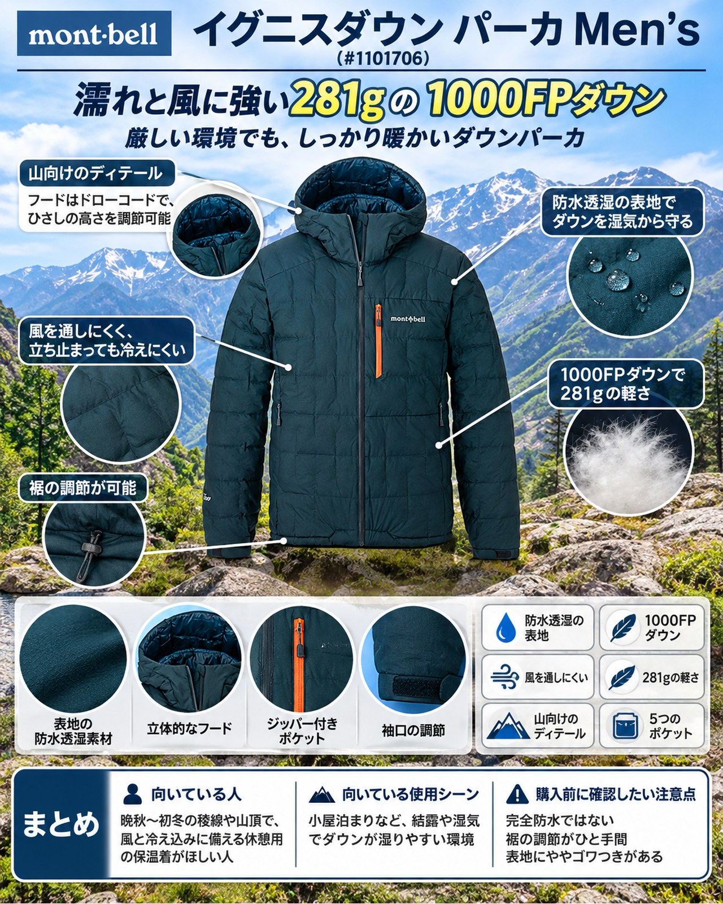

11月に入り、3000m級の稜線では氷点下の日が増えてきました。今週末は冬型の気圧配置で冷え込む見込みです。晴れても風が冷たく、山頂や小屋の前で立ち止まると一気に体が冷える季節。休憩用の保温着を選ぶなら、暖かさだけでなく「湿気や風にどこまで耐えられるか」も気にしておきたいところです。そこで紹介するのが、モンベルの「イグニスダウン パーカ Men's」（品番 #1101706）です。モンベル独自の防水透湿素材「スーパー ドライテック」の表地で、1000フィルパワー・EXダウンを包んだ軽量モデル。晩秋から初冬の稜線歩きや、冷え込む山小屋泊まりで、休憩や朝夕に羽織る1枚を探している人に向きます。
基本スペック
※仕様・価格は2026年11月5日時点のモンベル公式オンラインストアの表示です。
| 項目 | 内容 |
|---|---|
| 商品名 | イグニスダウン パーカ Men's |
| 品番 | #1101706 |
| 平均重量 | 281g |
| 収納サイズ | Φ12×20cm（2.3L） |
| 表地 | スーパー ドライテック2レイヤー 12デニール・バリスティック エアライト®ナイロン・リップストップ［はっ水加工］ |
| 裏地 | 7デニール・バリスティック エアライト®ナイロン・タフタ |
| 保温材 | 1000フィルパワー・EXダウン |
| ポケット | 5個（ジッパー付き：左胸1・腰2、ジッパーなし：内2） |
| カラー | ブルーグリーン、ブラック、オレンジ、タン |
| サイズ | S、M、L、XL、XXL、M-R・L-R（ゆったり幅） |
| 価格 | 39,600円（税込） |
防水透湿の表地でダウンを湿気から守る
表地の防水透湿素材「スーパー ドライテック」が、湿度の高い環境でもダウンをドライに保ちます。1000フィルパワー本来のロフトを損なわずに暖かさをキープする設計です。透湿性は20,000〜60,000g/m²・24hrs（JIS L-1099B-1法）と表記されています（商品によって性能が異なるとの注記があります）。一部の紹介では、湿気や小雨にさらされてもロフトが落ちにくい点がポイントに挙げられています。使った人の声では、表地に水を垂らして5分置いたあとでも、水は染み込まず中わたも濡れていなかったとされています。
風を通しにくく、立ち止まっても冷えにくい
使った人の声では、11月の風が強い寒い日に着用しても、表地が風を防いでいて風による冷え感はなかったとされています。冬型で風が強まる週末の稜線や山頂では、この点が心強く感じられるはずです。
1000FPダウンで281gの軽さ
1000フィルパワーのダウンは、一般的な550フィルパワーのダウンと比べて綿量を約45％軽くできるとされています。平均重量は281g、収納サイズはΦ12×20cm（2.3L）。行動中はスタッフバッグに入れてザックにしまっておけます。使った人の声でも、フード付きのダウンジャケットとしては非常にコンパクトだと評価されています。
山向けのディテール
フードは「デュアルアクスルフード」で、顔周りをドローコードで、ひさしの高さをベルクロで調節できます。袖口はフィット感を調節できるアルパインカフ、フロントは止水性のある「アクアテクト®ジッパー」で、ジッパーがあごに当たらない仕様です。内側にはグローブなどを入れられるポケットが2つあり、休憩中に手袋を温めておく使い方もできます。
デメリット・注意点
- 完全防水ではない：シームテープ処理を施していないため、縫い目から浸水する可能性があると明記されています。本降りや長時間の雨・湿雪には、レインシェルを重ねてください。
- 裾の調節がひと手間：裾のドローコードはポケット内にあります。使った人の声では、微調整のたびにフロントジッパーを開ける必要があり、やや手間がかかるとされています。
- 表地にややゴワつきがある：使った人の声では、軽量性に特化したダウンジャケットの表地に比べるとゴワゴワ感があるとされています。同じ1000フィルパワーの「プラズマ1000ダウン」より保温力は高い一方で、重量は重くなります。
- 薄手の生地で羽毛が抜けることがある：公式の注意事項では、軽量化のため薄手の生地を使っており、着用中の伸縮で生地やステッチから羽毛が抜け出すことがあるとされています。淡い色の表地では濃色の羽毛が透けて見える場合もあります。
- 価格が高い：税込39,600円で、保温着としては高価な部類です。
- 洗濯に気を使う：ダウン専用洗剤と洗濯ネットの使用が求められています。
向いている人・向いていない人
◎向いている人
- 晩秋〜初冬の稜線や山頂で、風と冷え込みに備える休憩用の保温着がほしい人
- 小屋泊まりなど、結露や湿気でダウンが湿りやすい環境で使いたい人
- 軽さとコンパクトさを重視しつつ、ダウンの濡れも気にしたい人
△向いていない人
- 雨の中でレインウェアなしで着たい人
- 行動中に着続けて汗をかく使い方が中心の人
- 価格を抑えて保温着をそろえたい人
まとめ
モンベルの「イグニスダウン パーカ Men's」は、1000フィルパワー・EXダウンを防水透湿素材「スーパー ドライテック」で包んだ、平均重量281gのダウンパーカです。湿気や風に強い表地と、フード・袖口・裾まで調節できる山向けの作りが魅力です。完全防水ではないことと価格の高さを理解したうえで、冷え込みが本格化する週末の稜線や小屋泊まりに持っていく保温着の候補にしてみてください。
この記事で紹介した商品
価格・重量・在庫は各ブランド公式サイトの記載（確認日つき）にもとづきます。商品を押すと、購入先を選べます。
この記事にはアフィリエイト広告が含まれます。リンク先での購入により、当サイトが報酬を受け取る場合があります。山行の前には、最新の気象とルートの状況を必ずご確認ください。